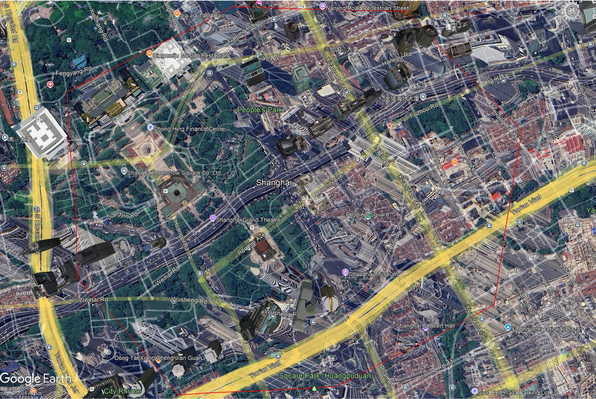
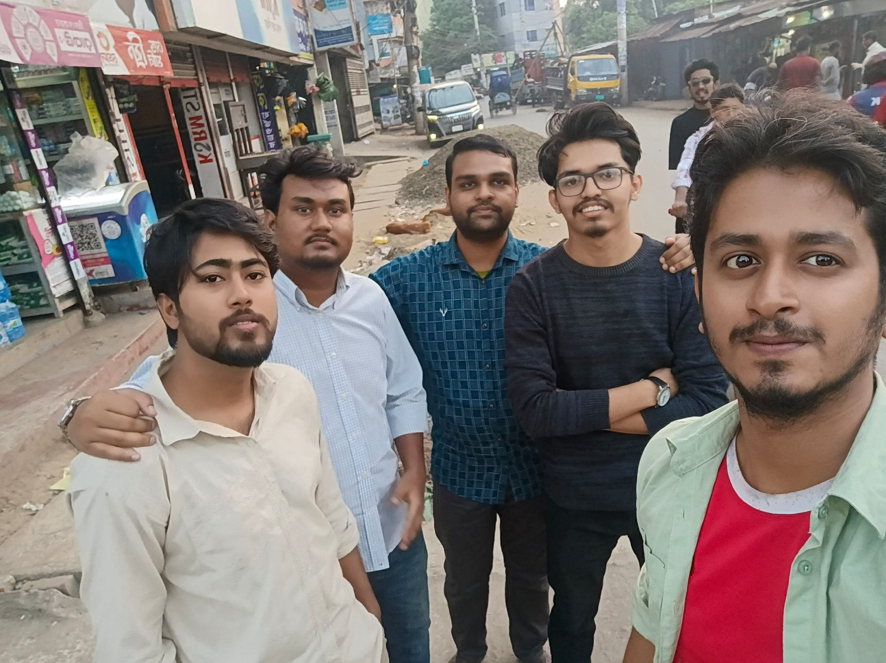
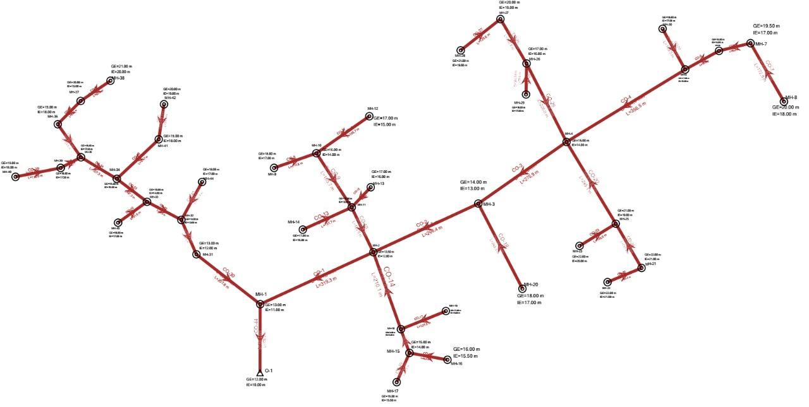
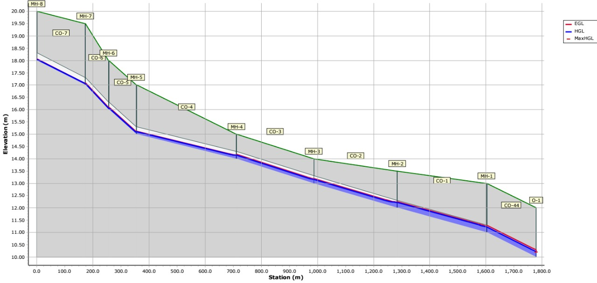
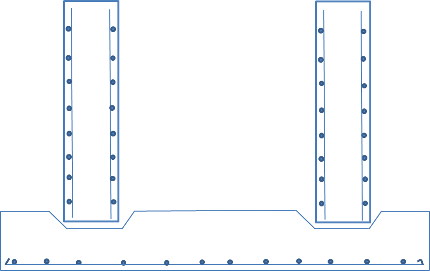

From site observation to network layout
The group project focused on a densely populated section of Sheikhpara in Khulna. The workflow began with site observation and location mapping, then translated the local road/settlement context into a sewer-network layout suitable for hydraulic design.


Hand calculations + SewerGEMS model
The network was first developed through hand calculations and then represented in SewerGEMS. The digital model provided a way to inspect the complete network and elevation profile rather than treating each reach independently.


Selected treatment-unit design
The project extended beyond collection-network layout to selected treatment units, including a sedimentation tank and trickling filter. The trickling-filter design example used a hydraulic flow of 2,600 m³/day, influent BOD₅ of 150 mg/L and target effluent BOD₅ of 12 mg/L, corresponding to a nominal removal efficiency of about 92% in the presentation calculations.
The presentation also includes reinforced-concrete detailing calculations for treatment structures, linking process design with structural detailing.

Project scope & role framing
This was a group academic project, not an individual research publication. I therefore present it as evidence of applied environmental-engineering design experience rather than as an independent research contribution. The source presentation identifies the team members and documents the shared site, network and treatment-design work.